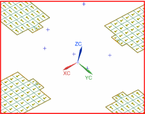

Check material orientation
Verify that the material orientation you defined for the solar collectors is correct.
 Simulation Navigator
Simulation Navigator
-
 Honeycomb_Collector
Honeycomb_Collector -
 Check All→Material Orientation
Check All→Material Orientation -
 Shell Orientation
Shell Orientation -
Display Element Material Orientation
-

The arrows should point along the length of the solar panels, indicating the orientation of the material.
-
Close
Element Material Orientation dialog box